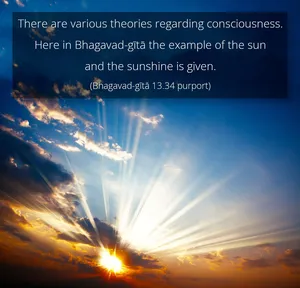
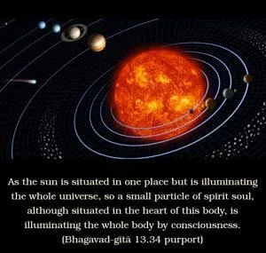
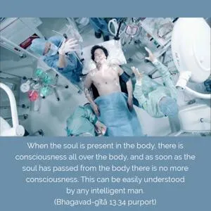
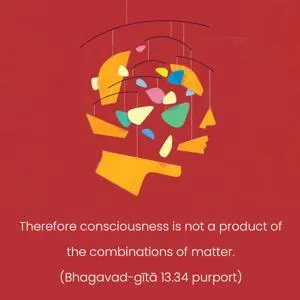
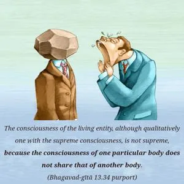

O son of Bharata, as the sun alone illuminates all this universe, so does the living entity, one within the body, illuminate the entire body by consciousness.





There are various theories regarding consciousness. Here in Bhagavad-gītā the example of the sun and the sunshine is given. As the sun is situated in one place but is illuminating the whole universe, so a small particle of spirit soul, although situated in the heart of this body, is illuminating the whole body by consciousness. Thus consciousness is the proof of the presence of the soul, as sunshine or light is the proof of the presence of the sun. When the soul is present in the body, there is consciousness all over the body, and as soon as the soul has passed from the body there is no more consciousness. This can be easily understood by any intelligent man. Therefore consciousness is not a product of the combinations of matter. It is the symptom of the living entity. The consciousness of the living entity, although qualitatively one with the supreme consciousness, is not supreme, because the consciousness of one particular body does not share that of another body. But the Supersoul, which is situated in all bodies as the friend of the individual soul, is conscious of all bodies. That is the difference between supreme consciousness and individual consciousness.